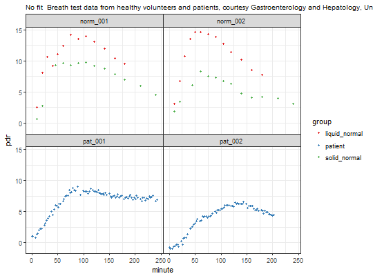

13C time series PDR data from normals and random patients from the division of Gastroenterology and Hepatology, University Hospital Zurich. Most breath samples from normals were collected with bags and analyzed by IRIS/Wagner infrared spectroscopy. Patient samples were recorded with the continuous monitoring system BreathID.
Patient identifier, starting with norm for normals
(healthy volunteers) and pat for patients. Note that for normals
there are two records for each subject, so only the combination of group and
is a unique of the record.
liquid_normal for normals and liquid meal,
solid_normal normals and solid meal, and patient for patients;
patients are an unselected cross-section from the University Hospital of Zurich.
Time in minutes
PDR as computed by breathtest device or from dob via function dob_to_pdr
data(usz_13c)
A data frame with 15574 rows and 4 variables
data(usz_13c) not_run({ str(usz_13c) # Plot all records; this needs some time pdf("usz_13c.pdf", height= 30) # null_fit makes data plotable without fitting a model plot(null_fit(usz_13c)) dev.off() }) # Plot a subset suppressPackageStartupMessages(library(dplyr)) usz_part = usz_13c %>% filter(patient_id %in% c("norm_001","norm_002", "pat_001", "pat_002")) plot(null_fit(usz_part))